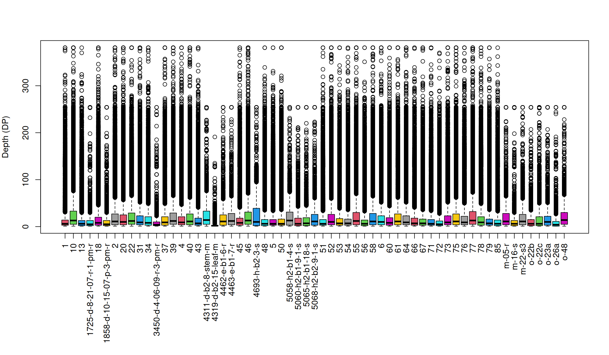
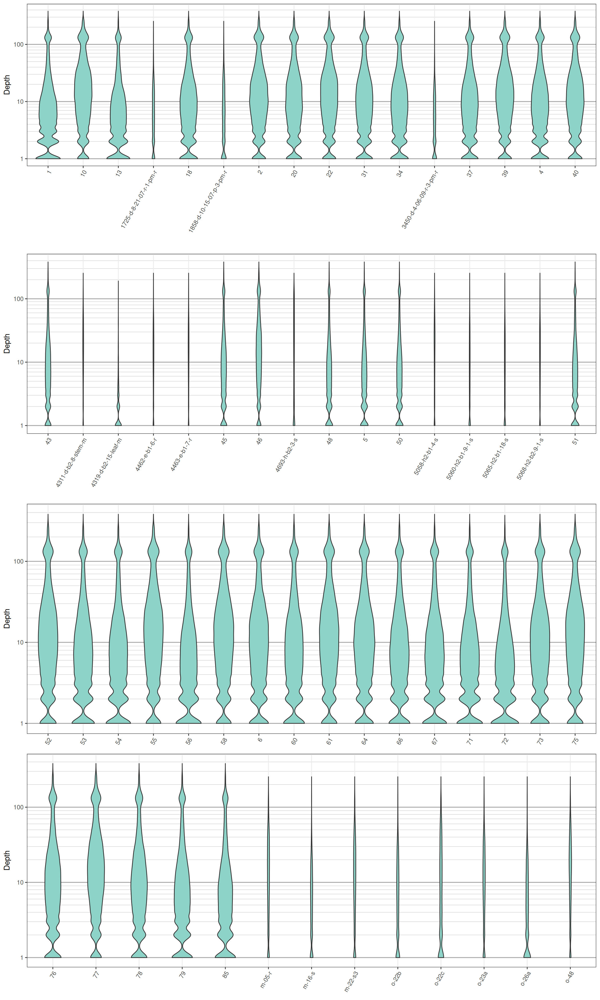

Once a sequencing run is complete the data are typically mapped to a reference genome, variants are called and these variant are stored in a VCF file. At this point one of the first questions asked is how well did the sequencing go? One measure of sequencing quality is sequence depth or how many times each position was sequenced. In VCF data only information on the variable positions are reported. But this can be used as a convenient subset of an entire genome. Many variant callers report this information, but not all. Make sure to check your variant caller documentation if you do not see this information in your file, there is a chance it was an option that was not selected. Here we visualize the depth information from a VCF file to provide a perspective on sequence quality.
We can extract the depth data (DP) as explained elsewhere. This results in a matrix of depth data. We can take a quick peak at this to remind us what it looks like.
dp[1:4,1:6]## 1 10 13 1725-d-8-21-07-r-1-pm-r 18 1858-d-10-15-07-p-3-pm-r
## S1_4509 5 10 9 NA 5 NA
## S1_4657 1 4 1 NA 7 NA
## S1_5193 NA NA 3 NA NA NA
## S1_5647 5 8 NA NA 3 NAWe see that it is a large matrix containing lots of numbers, so viewing it directly is of little use. Here we’ll demonstrate the use of barplots and violin plots to visualize this data. Once we have an idea of what the data look like, we’ll see how we can censor data that we determine to be unusual.
Base R includes a great selection of graphical tools. One is barplot(). A few things nice about this function is that it is designed to work on matrices, such as the one we have, and that it is quick to execute.
par(mar=c(12,4,4,2))
boxplot(dp, col=2:8, las=3)
title(ylab = "Depth (DP)")
par(mar=c(5,4,4,2))We’ve generated a box and whisker plot for each sample where 50% of the data is contained within each colored box and outliers are presented at circles. One issue with this plot is that all of the data seem squished at the bottom of the plot. A log transformation could help this plot. Remember that log of zero is undefined, so if you persue a log transformation you may need to handle these cases. An observation to note is that the samples appear to exist as two classes. The samples with long names appear to have lower sequence depth. This is likely due to some form of batch effect.
Violin plots are similar to boxplots except that they attempt to present the distribution of the data that would otherwise be represented by a box. We’ll neeed to load a few packages to add functions to help us. I think you’ll see that violin plots are a little more involved to create, and they are slower to render, but many find them to be more informative and more aesthetically pleasing.
library(reshape2)
library(ggplot2)
library(cowplot)##
## Attaching package: 'cowplot'## The following object is masked from 'package:ggplot2':
##
## ggsave# Melt our matrix into a long form data.frame.
dpf <- melt(dp, varnames=c('Index', 'Sample'), value.name = 'Depth', na.rm=TRUE)
dpf <- dpf[ dpf$Depth > 0,]
# Create a row designator.
# You may want to adjust this
#samps_per_row <- 20
samps_per_row <- 16
myRows <- ceiling(length(levels(dpf$Sample))/samps_per_row)
myList <- vector(mode = "list", length = myRows)
for(i in 1:myRows){
myIndex <- c(i*samps_per_row - samps_per_row + 1):c(i*samps_per_row)
myIndex <- myIndex[myIndex <= length(levels(dpf$Sample))]
myLevels <- levels(dpf$Sample)[myIndex]
myRegex <- paste(myLevels, collapse = "$|^")
myRegex <- paste("^", myRegex, "$", sep = "")
myList[[i]] <- dpf[grep(myRegex, dpf$Sample),]
myList[[i]]$Sample <- factor(myList[[i]]$Sample)
}
# Create the plot.
myPlots <- vector(mode = "list", length = myRows)
for(i in 1:myRows){
myPlots[[i]] <- ggplot(myList[[i]], aes(x=Sample, y=Depth)) +
geom_violin(fill="#8dd3c7", adjust=1.0, scale = "count", trim=TRUE)
myPlots[[i]] <- myPlots[[i]] + theme_bw()
myPlots[[i]] <- myPlots[[i]] + theme(axis.title.x = element_blank(),
axis.text.x = element_text(angle = 60, hjust = 1))
myPlots[[i]] <- myPlots[[i]] + scale_y_continuous(trans=scales::log2_trans(),
breaks=c(1, 10, 100, 800),
minor_breaks=c(1:10, 2:10*10, 2:8*100))
myPlots[[i]] <- myPlots[[i]] + theme( panel.grid.major.y=element_line(color = "#A9A9A9", size=0.6) )
myPlots[[i]] <- myPlots[[i]] + theme( panel.grid.minor.y=element_line(color = "#C0C0C0", size=0.2) )
}# Plot the plot.
plot_grid(plotlist = myPlots, nrow = myRows)
We can see that the log transformation stretches out the smaller values and compresses the larger values. This allows us to focus on where our data has the greatest density. We see that the samples with long names have more narrow plots than the samples with short names. This is because they have less data. This is another perspective on what we saw in the barplots. Things to look for in these plots are whether all samples are equally represented, whether there are a few samples of low quality that may need to be omitted from downstream analyses, or if therre are a small number of jackpot samples that received all the reads at the expense of the other samples. Here the samples appear to be eqaully represented with the exception of the issues noted with the samples with long names.
We see from our plot that there is a considerable amount of variation in depth within each sample. For example, if we sequenced a genome at 10X coverage we would expect most of our variants to be sequenced at this depth. Instead we see quite a range. Variants sequenced at low coverage may only observe one of two alleles in a diploid. Because of this, we may want to omit variants of low coverage. Variants sequenced at high coverage may be from repetetive regions that were assembled in our reference as a single region. This means that different alleles may be from different copied (loci), so we may want to omit these. Here we’ll censor the variants that we do not feel are of ‘typical’ coverage. When we censor variants we’ll score them as missing (NA) so let’s begin by reminding us how abundant NAs are in our dataset.
vcf## ***** Object of Class vcfR *****
## 61 samples
## 69,296 variants
## Object size: 46.5 Mb
## 37.62 percent missing data
## ***** ***** *****A number off methods can be used to create intervals that you may consider acceptable. I like to use quantiles because they are non-parametric and we can fit different intervals to different samples using apply().
quants <- apply(dp, MARGIN=2, quantile, probs=c(0.1, 0.8), na.rm=TRUE)We can create a second matrix of depths where we subtract the lower threshold of each sample from its depth using the function sweep(). Now all depths in the matrix that are below zero are below our threshold. We can use this information to set these cell to NA in the original matrix. We can similarly subtract the upper threshold from our samples to create a second matrix. Now everything above zero is above our threshold and can be set to NA.
dp2 <- sweep(dp, MARGIN=2, FUN = "-", quants[1,])
dp[dp2 < 0] <- NA
dp2 <- sweep(dp, MARGIN=2, FUN = "-", quants[2,])
dp[dp2 > 0] <- NA
dp[dp < 4] <- NANow that we know which cells we want to censor as NA we can use this information to update the vcfR object. Don’t forget that the first column of the gt matrix is the ‘FORMAT’ column. We can omit this from our selection by using -1.
vcf@gt[,-1][ is.na(dp) == TRUE ] <- NANow see how this has affected missingness in our vcfR object.
vcf## ***** Object of Class vcfR *****
## 61 samples
## 69,296 variants
## Object size: 45.2 Mb
## 66.63 percent missing data
## ***** ***** *****We’ve now used our depth information to censor variants that we feel are of unusual sequence depth. We’ve also used this information to update our vcfR object so that our data can remain in a constant format. This has resulted in a vcfR object with a greater degree of missing data. We’ll deal with mitigating missing data in another section. A similar approach can be used if there are parameters other than depth that a researcher would like to filter on. We now have a vcfR object that has variants that we feel are of higher quality than our original file.
Copyright © 2017 Brian J. Knaus. All rights reserved.
USDA Agricultural Research Service, Horticultural Crops Research Lab.